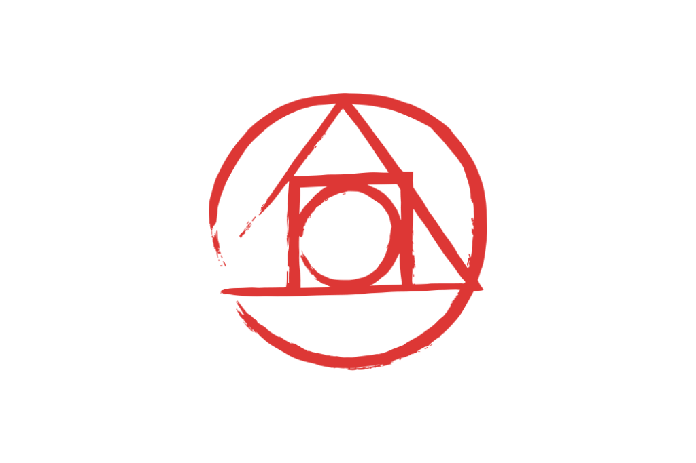

PostCSS
PostCSS, como se describe en su página oficial, es “una herramienta para transformar CSS con plugins de Javascript”. En este artículo explicaremos más profundamente de qué se trata cómo podemos usar PostCSS en nuestros proyectos.
Tal como mencionamos antes, PostCSS es una herramienta que por sí sola no realiza una acción, pues es hasta que utilizamos los plugins que verdaderamente podemos ver la magia de PostCSS. Las estadísticas de npm (node package manager) muestran que del 2015 a la actualidad, PostCSS ya cuenta con más de 25.884,079 descargas
Anteriormente mencionamos que PostCSS necesita de sus plugins para brillar y podemos encontrar un amplio catálogo de estos plugins tanto en su página oficial como los desarrollados por la comunidad en GitHub. ¡Esto es lo mejor de todo! Nosotros mismos podemos llegar a desarrollar nuestros propios plugins para realizar tareas muy específicas de acuerdo a nuestra necesidad.